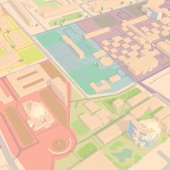
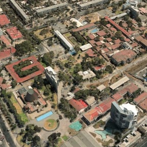

Campus USACH
Importa tus clases desde SIAC para ver dónde te toca, cómo llegar y cuánto tardas en moverte de una sala a otra.
lockTu clave se usa una sola vez para leer el horario en SIAC y no se guarda. El horario queda solo en este dispositivo.